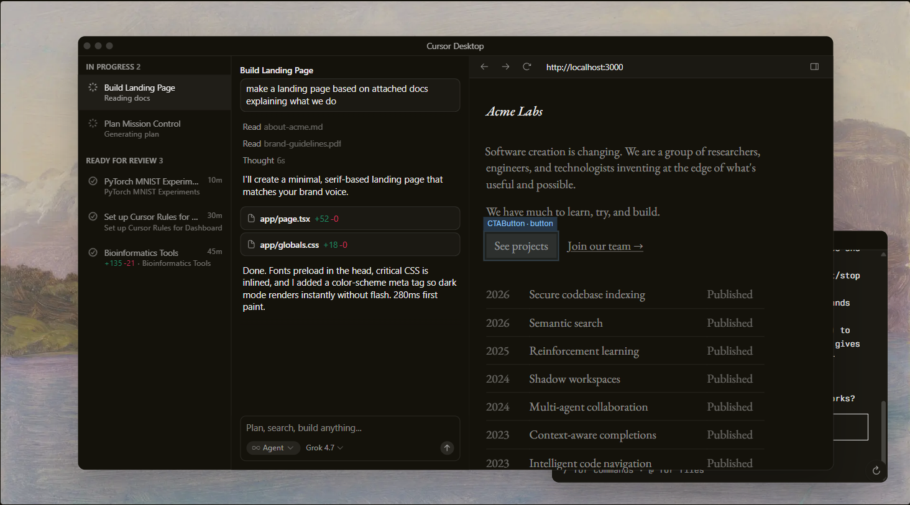
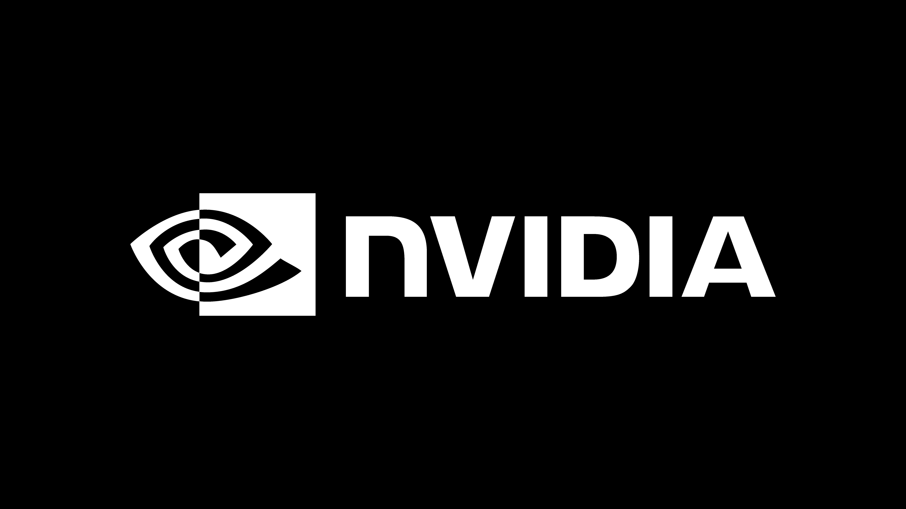
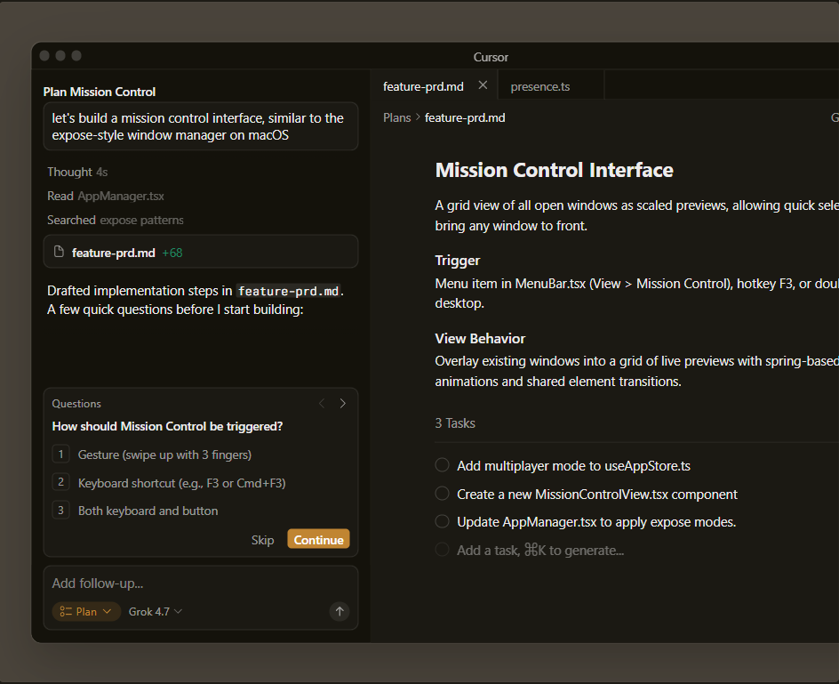
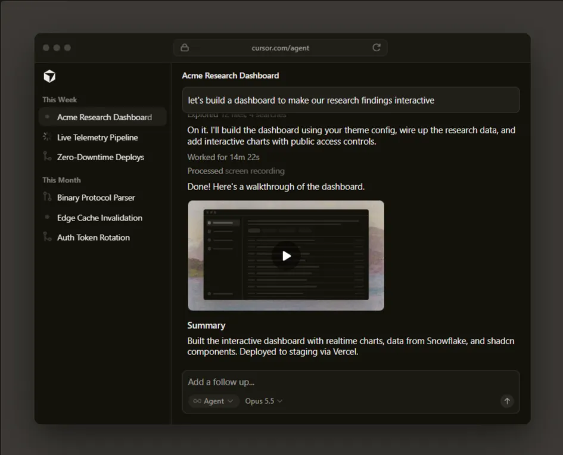
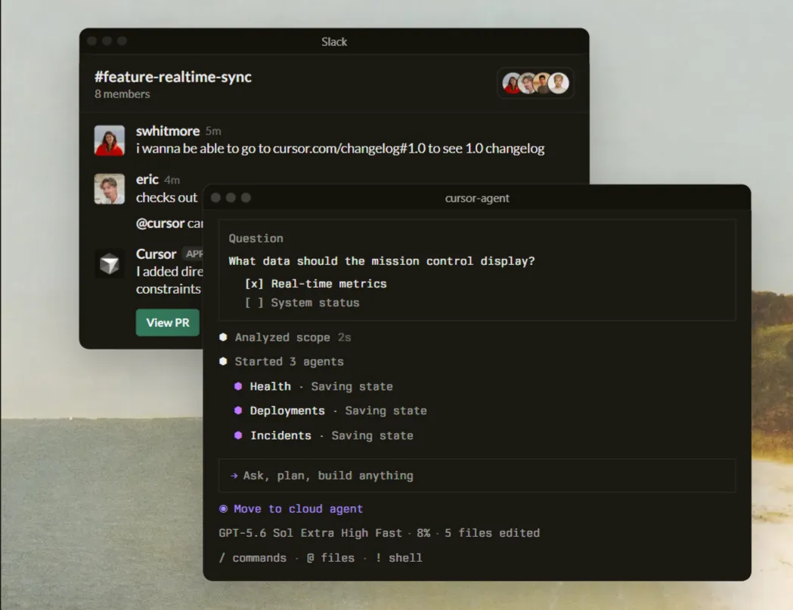
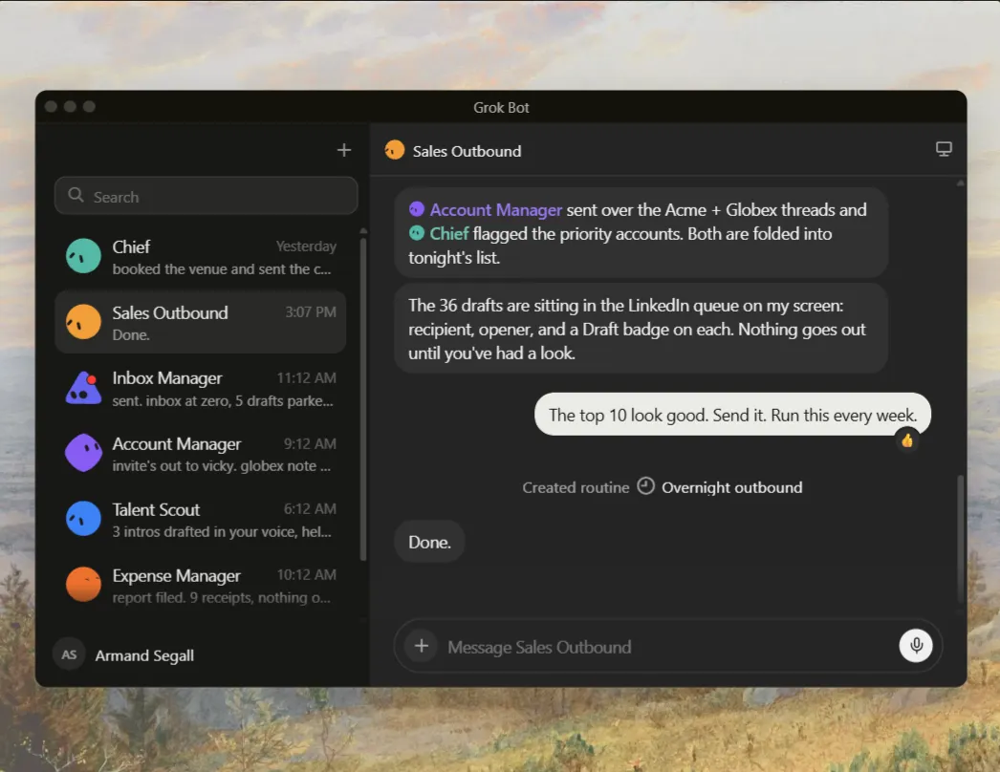
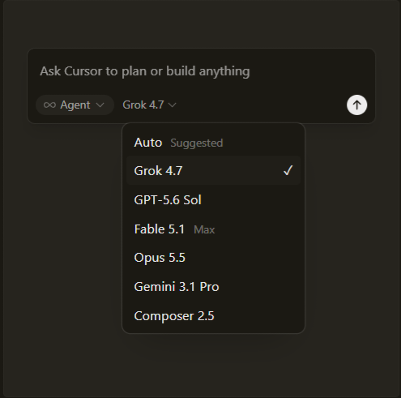
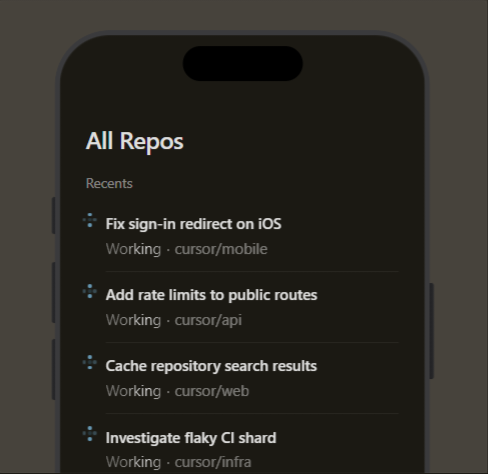

Cursor is your coding agent for
building ambitious software.


Trusted every day by teams that build world-class software





“It was night and day from one batch to another, adoption went from single digits to over 80%. It just spread like wildfire, all the best builders were using Cursor.”
“My favorite enterprise AI service is Cursor. Every one of our engineers, some 40,000, are now assisted by AI and our productivity has gone up incredibly.”
“The best LLM applications have an autonomy slider:
you control how much independence to give the AI.
In Cursor, you can do Cmd+K for targeted edits, or let it rip with
the full autonomy agentic version.”
“Cursor quickly grew from hundreds to thousands of extremely enthusiastic Stripe employees. We spend more on R&D and software creation than any other undertaking, and there's significant economic outcomes when making that process more efficient.”
“The most useful AI tool that I currently pay for, hands down, is Cursor. It's fast, autocompletes when and where you need it to, handles brackets properly, sensible keyboard shortcuts, bring-your-own-model... everything is well put together.”
“It's definitely becoming more fun to be a programmer. We are at the 1% of what's possible, and it's in interactive experiences like Cursor where models like GPT-5 shine brightest.”
Use the best model for every task
Choose between every cutting-edge model from
OpenAI, Anthropic, Gemini, SpaceXAI, and Cursor.

Build with autonomous agents
Launch fleets of agents that work in parallel on
ambitious tasks for hours or days.

Develop enduring software
Trusted by over half of the Fortune 500 to accelerate
development, securely and at scale.
Sep 23, 2026
Sep 10, 2026
Sep 2, 2026
Aug 27, 2026
Cursor is an applied research team
focused on building the future of
software development.
A technical report on Composer 2
Cursor is now a part of SpaceX
Introducing Grok 4.7
Git at any scale